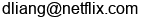

Dawen Liang
 |
Email:  I am a research scientist at Netflix. I completed my Ph.D. in the Electrical Engineering Department at Columbia University, as part of the LabROSA, working with Professor Dan Ellis and Professor David Blei. My CV is available here, as of Sep 2020. Prior to that, I completed my master's degree in Music and Technology program at Carnegie Mellon University, working with Professor Roger Dannenberg in the School of Computer Science, where I was part of the Computer Music Group. I received my bachelor's degree in Computer Science at Fudan University. |
Education
Ph.D., Electrical Engineering, Columbia University, June 2016
M.S., Music and Technology, Carnegie Mellon University, May 2012
B.S., Computer Science, Fudan University, Jun 2010
Research
Probabilistic latent variables models and applications to recommender systems.
Bandit, reinforcement learning, and causal inference.
Experience
Research Scientist, Product Machine Learning Research, Netflix, July 2016 – present
Recommendation Systems Scientist Intern, Playlist Team, Pandora, May 2015 – Aug 2015
Investigate hybrid approaches to collaborative filtering. Mentors: Erik Schmidt and Keki Burjorjee.
Research Intern, Adobe Creative Technology Laboratory, Adobe Inc., May 2013 – Aug 2013, May 2014 – Aug 2014
Bayesian hierarchical model of audio. Mentors: Matt Hoffman and Gautham Mysore.
Papers
For the most up-to-date information please see my Google Scholar page.
Preprints
- Local Policy Improvement for Recommender Systems [arXiv]
Dawen Liang and Nikos Vlassis, 2022.
- Learning Correlated Latent Representations with Adaptive Priors [arXiv]
Da Tang, Dawen Liang, Nicholas Ruozzi, and Tony Jebara, 2019.
- The Deconfounded Recommender: A Causal Inference Approach to Recommendation [arXiv]
Yixin Wang, Dawen Liang, Laurent Charlin, and David M. Blei, 2018.
Peer-reviewed Journal Articles
- Deep Learning for Recommender Systems: A Netflix Case Study [PDF]
Harald Steck, Linas Baltrunas, Ehtsham Elahi, Dawen Liang, Yves Raimond, Justin Basilico, AI Magazine, 42(3), 7-18, 2021.
- Methods and Prospects for Human Computer Performance of Popular Music
Roger B. Dannenberg, Nicolas E. Gold, Dawen Liang, Guangyu Xia, Computer Music Journal, 38(2):36-50, 2014, MIT Press.
- Active Scores: Representation and Synchronization in Human-Computer Performance of Popular Music
Roger B. Dannenberg, Nicolas E. Gold, Dawen Liang, Guangyu Xia, Computer Music Journal, 38(2):51-62, 2014, MIT Press.
Peer-reviewed Conference Papers and Workshop Contributions
- Negative Interactions for Improved Collaborative Filtering: Don’t go Deeper, go Higher [PDF] [Code] (Best paper honorable mention)
Harald Steck and Dawen Liang, ACM Conference on Recommender Systems (RecSys), 2021.
- Causal Inference for Recommender Systems [PDF] [Code]
Yixin Wang, Dawen Liang, Laurent Charlin, and David M. Blei, ACM Conference on Recommender Systems (RecSys), 2020.
- Correlated Variational Auto-Encoders [arXiv] [Code]
Da Tang, Dawen Liang, Tony Jebara, Nicholas Ruozzi, International Conference on Machine Learning (ICML), 2019.
- Variational Autoencoders for Collaborative Filtering [PDF] [arXiv] [Code]
Dawen Liang, Rahul G. Krishnan, Matthew D. Hoffman, Tony Jebara, The Web Conference (WWW), 2018.
- On the challenges of learning with inference networks on sparse, high-dimensional data [arXiv] [Code]
Rahul G. Krishnan, Dawen Liang, Matthew D. Hoffman, International Conference on Artificial Intelligence and Statistics (AISTATS), 2018.
- Causal Inference for Recommendation [PDF]
Dawen Liang, Laurent Charlin, David M. Blei, UAI Workshop on Causation: Foundation to Application, 2016.
- Factorization Meets the Item Embedding: Regularizing Matrix Factorization with Item Co-occurrence [PDF] [Code]
Dawen Liang, Jaan Altossar, Laurent Charlin, David M. Blei, ACM Conference on Recommender Systems (RecSys), 2016.
- Modeling User Exposure in Recommendation [PDF] [Code]
Dawen Liang, Laurent Charlin, James McInerney, David M. Blei, International Conference on World Wide Web (WWW), 2016.
- Content-Aware Collaborative Music Recommendation Using Pre-trained Neural Networks [PDF] [Code]
Dawen Liang, Minshu Zhan, and Daniel P. W. Ellis, International Society for Music Information Retrieval (ISMIR), 2015.
- Landmarking Manifolds with Gaussian Processes [PDF] [Code]
Dawen Liang and John Paisley, International Conference on Machine Learning (ICML), 2015.
- librosa: Audio and Music Signal Analysis in Python [PDF] [librosa@github]
Brian McFee, Colin Raffel, Dawen Liang, Daniel P. W. Ellis, Matt McVicar, Eric Battenberg, and Oriol Nieto, Proceedings of the 14th Python in Science Conference (SciPy), 2015.
- Speech Dereverberation using a Learned Speech Model [PDF]
Dawen Liang, Matthew D. Hoffman, and Gautham J. Mysore, IEEE International Conference on Acoustics, Speech and Signal Processing (ICASSP), 2015.
- Beta Process Non-negative Matrix Factorization with Stochastic Structured Mean-Field Variational Inference [PDF] [Code]
Dawen Liang and Matthew D. Hoffman, NIPS Workshop on Advances in Variational Inference, 2014.
- Codebook-based Scalable Music Tagging with Poisson Matrix Factorization [PDF] [Code]
Dawen Liang, John Paisley, and Daniel P. W. Ellis, International Society for Music Information Retrieval (ISMIR), 2014.
- mir_eval: A Transparent Implementation of Common MIR Metrics [PDF] [mir_eval@github]
Colin Raffel, Brian McFee, Eric J. Humphrey, Justin Salamon, Oriol Nieto, Dawen Liang, and Daniel P. W. Ellis, International Society for Music Information Retrieval (ISMIR), 2014.
- Speech Decoloration based on the Product-of-Filters Model [PDF]
Dawen Liang, Daniel P. W. Ellis, Matthew D. Hoffman, and Gautham J. Mysore, IEEE International Conference on Acoustics, Speech and Signal Processing (ICASSP), 2014.
- A Generative Product-of-Filters Model of Audio [PDF] [Code]
Dawen Liang, Matthew D. Hoffman, and Gautham J. Mysore, International Conference on Learning Representations (ICLR), 2014.
- Beta Process Sparse Nonnegative Matrix Factorization for Music [PDF] [Code] (Best student paper award)
Dawen Liang, Matthew D. Hoffman, and Daniel P. W. Ellis, International Society for Music Information Retrieval (ISMIR), 2013.
- Segmentation, Clustering, and Display in a Personal Audio Database for Musicians [PDF]
Guangyu Xia, Dawen Liang, Roger B. Dannenberg, and Mark J. Harvilla, International Society for Music Information Retrieval Conference (ISMIR), 2011.
- A Framework for Coordination and Synchronization of Media [PDF]
Dawen Liang, Guangyu Xia, and Roger B. Dannenberg, New Interfaces for Musical Expression (NIME), 2011.
PhD Thesis
- Understanding Music Semantics and User Behavior with Probabilistic Latent Variable Models [PDF]
Dawen Liang, Department of Electrical Engineering, Columbia University, 2016 (DOI: 10.7916/D8TH8MZP)
Miscellaneous
Here are some notes regarding some topics I found interesting. I wrote these just for fun (and I think they will be useful sometime in the future). Therefore, there might be mistakes/errors in these notes. If you find any problem, please let me know.
A proof that Maximum Likelihood Estimation (MLE) is biased for variance estimator.
A note that shows some useful properties for matrix derivative.
Some technical details for the Expectation Maximization (EM) algorithm.